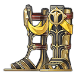

추천 광추
이 순간처럼 영원한 사랑
속도·치명타 지원
효과 자세히
다른 기억 캐릭터가 사용하지 않을 때.
핑크빛 내일을 향해
전투 보상 · 팀 피해
효과 자세히
강화 일반 공격형 보조 딜러 및 기억 지원.
기억은 영원히 막을 내리지 않는다
헤르타 상점 · 속도
효과 자세히
기억 정령 스킬 뒤 팀 피해 증가.
불타는 그림자
첫 정령 소환 SP와 에너지
효과 자세히
초반 미미 충전에 집중할 때.
추천 유물
천지를 재창조한 구세주 4 · 영원의 땅 앰포리어스 2
- 머리
 주옵션HP부옵션속도 · 치명타 피해 · 효과 저항
주옵션HP부옵션속도 · 치명타 피해 · 효과 저항 - 손
 주옵션공격력부옵션속도 · 치명타 피해 · 효과 저항
주옵션공격력부옵션속도 · 치명타 피해 · 효과 저항 - 몸통
 주옵션치명타 피해부옵션속도 · 효과 저항
주옵션치명타 피해부옵션속도 · 효과 저항 - 다리

주옵션속도부옵션치명타 피해 · 효과 저항 - 구체
 주옵션얼음 피해 / HP% / 방어력%부옵션속도 · 치명타 피해 · 효과 저항
주옵션얼음 피해 / HP% / 방어력%부옵션속도 · 치명타 피해 · 효과 저항 - 매듭
 주옵션에너지 회복효율부옵션속도 · 치명타 피해 · 효과 저항
주옵션에너지 회복효율부옵션속도 · 치명타 피해 · 효과 저항
이 조합을 추천하는 이유
미미가 필드에 있으면 팀 피해와 속도를 보강.
밤낮의 경계를 나는 매 4 · 생명의 바커 공 2
- 머리
 주옵션HP부옵션속도 · 치명타 피해 · 효과 저항
주옵션HP부옵션속도 · 치명타 피해 · 효과 저항 - 손
 주옵션공격력부옵션속도 · 치명타 피해 · 효과 저항
주옵션공격력부옵션속도 · 치명타 피해 · 효과 저항 - 몸통
 주옵션치명타 피해부옵션속도 · 효과 저항
주옵션치명타 피해부옵션속도 · 효과 저항 - 다리
 주옵션속도부옵션치명타 피해 · 효과 저항
주옵션속도부옵션치명타 피해 · 효과 저항 - 구체
 주옵션얼음 피해 / HP% / 방어력%부옵션속도 · 치명타 피해 · 효과 저항
주옵션얼음 피해 / HP% / 방어력%부옵션속도 · 치명타 피해 · 효과 저항 - 매듭
 주옵션에너지 회복효율부옵션속도 · 치명타 피해 · 효과 저항
주옵션에너지 회복효율부옵션속도 · 치명타 피해 · 효과 저항
이 조합을 추천하는 이유
첫 행동과 필살기 이후 행동을 앞당겨 미미 충전을 지원.
천지를 재창조한 구세주 4 · 고요한 습골지 2
- 머리
주옵션HP부옵션속도 · 치명타 피해
- 손
주옵션공격력부옵션HP · 속도 · 치명타 피해
- 몸통
주옵션HP% / 치명타 피해부옵션HP · 속도 · 치명타 피해 (주옵션 제외)
- 다리 주옵션속도부옵션HP · 치명타 피해
- 구체
 주옵션HP%부옵션HP · 속도 · 치명타 피해
주옵션HP%부옵션HP · 속도 · 치명타 피해 - 매듭
 주옵션HP% / 에너지 회복효율부옵션HP · 속도 · 치명타 피해
주옵션HP% / 에너지 회복효율부옵션HP · 속도 · 치명타 피해
이 조합을 추천하는 이유
고요한 습골지는 HP 5000 이상에서 착용자와 기억 정령의 치명타 피해를 높입니다.
가상공간을 누비는 메신저 2 + 태양과 번개의 여전사 2 · 생명의 바커 공 2
- 머리
 주옵션HP부옵션속도 · 치명타 피해 · 효과 저항
주옵션HP부옵션속도 · 치명타 피해 · 효과 저항 - 손
 주옵션공격력부옵션속도 · 치명타 피해 · 효과 저항
주옵션공격력부옵션속도 · 치명타 피해 · 효과 저항 - 몸통
 주옵션치명타 피해부옵션속도 · 효과 저항
주옵션치명타 피해부옵션속도 · 효과 저항 - 다리
 주옵션속도부옵션치명타 피해 · 효과 저항
주옵션속도부옵션치명타 피해 · 효과 저항 - 구체
주옵션얼음 피해 / HP% / 방어력%부옵션속도 · 치명타 피해 · 효과 저항
- 매듭
주옵션에너지 회복효율부옵션속도 · 치명타 피해 · 효과 저항
이 조합을 추천하는 이유
메신저와 여전사 2세트로 각각 속도 6%를 얻습니다. 바커 공과 A2 행적을 합쳐 첫 행동 게이지를 70% 당깁니다.
이 정도면 잘 키웠다
선택한 세팅 기준 · —는 확인된 수치 없음
미미를 꾸준히 소환하고 치명타 피해를 공급합니다.
| 스탯 | 추천 스탯 | 준종결 | 종결 |
|---|---|---|---|
| 속도 | 134 | — | 134 |
| 치명타 피해 | 200~220% | — | — |
| 에너지 회복효율 | 119.44%+[1]앰포리어스 장착 기준으로 기본 100%와 5성 +15 에너지 회복효율 매듭의 19.44%p가 포함됩니다. | — | — |
세팅 기준·출처
134는 영원한 주말의 일반형 목표입니다. 공개 가이드에서 이 세팅의 준종결 수치를 확인하지 못했습니다.
스탯 조건과 각주
- 에너지 회복효율 · 추천 스탯 앰포리어스 장착 기준으로 기본 100%와 5성 +15 에너지 회복효율 매듭의 19.44%p가 포함됩니다. ↑
전투 시작과 필살기 후 행동을 당겨 미미에게 충전을 공급합니다.
| 스탯 | 추천 스탯 | 준종결 | 종결 |
|---|---|---|---|
| 속도 | 최대한 | — | — |
| 치명타 피해 | 200% | — | — |
세팅 기준·출처
매·바커 공 세팅의 준종결과 종결 수치는 별도 확인되지 않았습니다.
HP 공급과 미미의 보조를 함께 확보합니다.
| 스탯 | 추천 스탯 | 준종결 | 종결 |
|---|---|---|---|
| HP | 5000[1]카스토리스 조합과 습골지 추가 치명타 피해 발동 조건. | — | — |
| 속도 | 133.4 / 143 / 160 / 166.7 | — | — |
| 치명타 피해 | 200% | — | — |
세팅 기준·출처
공개 가이드에서 이 세팅의 준종결 또는 종결 수치를 확인하지 못했습니다.
스탯 조건과 각주
- HP · 추천 스탯 카스토리스 조합과 습골지 추가 치명타 피해 발동 조건. ↑
전투 시작 행동 당김을 겹쳐 첫 라운드에 세 번 행동합니다.
| 스탯 | 추천 스탯 | 준종결 | 종결 |
|---|---|---|---|
| 속도 | — | — | 154[1]영원한 주말의 종결표 수치입니다. A2 행적의 시작 행동 당김 30%와 바커 공의 40%를 함께 받으면 154에서 3번째 행동이 149.351 AV에 들어옵니다. |
| 에너지 회복효율 | 124.44%+[2]기본 100%, 5성 +15 에너지 회복효율 매듭 19.44%p, 바커 공 2세트 5%p를 포함합니다. | — | — |
세팅 기준·출처
혼돈의 기억 첫 라운드 150 AV에서 속도 변화나 추가 행동 당김 없이도 성립합니다. 공개 가이드에서 이 세팅의 준종결 수치를 확인하지 못했습니다.
성혼과 추천 돌파
보상으로 해금. 정령 편성은 2단계, 카스토리스처럼 최대 에너지 0인 딜러는 4단계 효과 확인.
1미미 응원 치확 +10%추천
기억 정령·기억 마스터가 함께 적용, 중첩 제한.
2다른 아군 정령 행동 → 에너지 +8pt추천
개척자 턴당 1회.
3전투 스킬·특성 +2 · 정령 특성 +1
해당 스킬과 대응 강화 스킬의 레벨을 올린다.
4최대 에너지 0인 아군 스킬 → 미미 충전 +3%추천
해당 아군 응원 확정 피해 배율 +6%p.
5필살기 +2 · 일반 공격·정령 스킬 +1
해당 스킬과 대응 강화 스킬의 레벨을 올린다.
6필살기 치확 100% 고정
계시의 전달자
추천 파티


기본 운영과 행적
기본 운영
전투 스킬로 미미를 소환하고 아군 에너지 획득으로 충전. 미미의 응원을 주 딜러 행동 전에 사용.
행적 육성 순서
기억 정령 스킬 → 기억 정령 특성 → 특성 → 필살기·전투 스킬·일반 공격. 승급 2단계 최초 충전 우선.
아하 속도 계산기 →